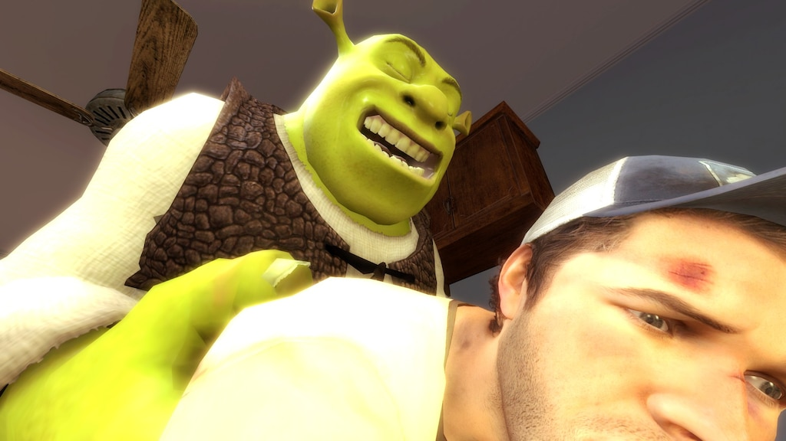
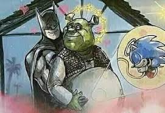
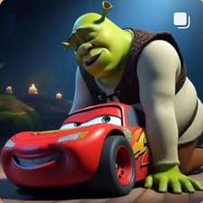
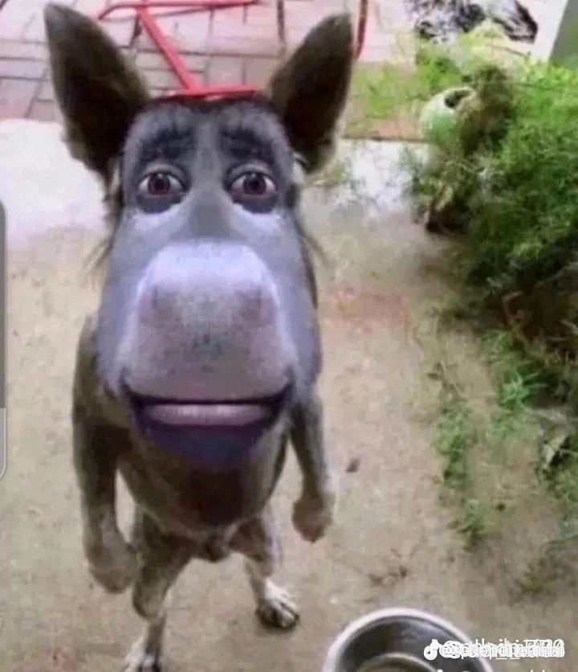

O Rugido do Pântano
Tipo: Ataque / Intimidação
Com seu rugido poderoso, Shrek afasta qualquer um que tente invadir seu pântano. Eficaz contra cavaleiros, fadas e princesas enjoadas.
O Ogro / Guardião do Pântano / Herói Improvável

"Melhor que cebola? Só eu mesmo!"
Shrek é um ogro rabugento que ama seu pântano e odeia quando os outros invadem seu espaço. Mas por trás de sua casca grossa, esconde um coração gigante e um senso de humor afiadíssimo.
Ele foi criado pela DreamWorks Animation e estreou em 2001 no filme "Shrek", que revolucionou a animação e ganhou o primeiro Oscar de Melhor Filme de Animação da história.
Sua jornada vai de ogro solitário a herói, marido da Princesa Fiona e pai de três filhos ogros.

Tipo: Ataque / Intimidação
Com seu rugido poderoso, Shrek afasta qualquer um que tente invadir seu pântano. Eficaz contra cavaleiros, fadas e princesas enjoadas.

Tipo: Psicológico / Suporte
Com seu sarcasmo afiado, Shrek desestabiliza qualquer oponente. "Melhor dar meia-volta e ir embora!" é sua frase de efeito.

Tipo: Defesa / Sabedoria
Shrek explica que sua vida tem camadas, como uma cebola. Essa sabedoria ogro torna imune a ofensas e críticas superficiais.
"Melhor dar meia-volta e ir embora!"
— Shrek, o Ogro do Pântano
"Minha vida tem camadas, como uma cebola!"
— Shrek explicando sua complexidade